Models & Collections List
Shows a list of models which were created while Backbone-Eye was running. Each model shows application level attributes only. Quickly narrow down a model by searching for attribute values. Pin down models whose behavior needs further investigation. Or allow Backbone-Eye to present those models which have been accessed the most during introspection.
View interaction trails and Journals
Select a model or collection to see it's interaction trail and journal. The interaction trail shows the model (or collections) interaction with other Backbone entities. The journal logs activities which have happened on the selected model. Change an attribute value from the application (or Backbone-Eye) to see it's impact on other views and entities
View List
A list of views which were created while Backbone-Eye was running. Identify views by hovering over your application screens. The underlying Backbone Views will automatically be highlighted. Similarly, click on Backbone Views to see what application screen they correspond to. Backbone-Eye also attempts to associate templates with views.
Debug Templates
Backbone-Eye allows for debugging of view templates. The id of the template is used to set a breakpoint in the view. Data passed to the template as well as incremental generation of the HTML string can be observed while stepping through the generated template code.

Navigate to an URL to begin introspecting. To explain the various features of Backbone Eye, we will use the Backbone TODO application as our reference application.
Model categorization
 |
This section has three sub sections.
|
Enumeration of Model attributes
Backbone Eye only enumerates application specific model properties and hides internal Backbone properties. Internal properties can be viewed - if required - in the journal and interaction trails views.

Edit model attributes
Backbone Eye allows you to edit the value of a model attribute to see the ripple effect - that model change - has on the entire application. To edit any attribute value, double click on the attribute name of the specific model and change it to a new value.
Internals: This maps to model.set({attribute_name:value})
Simulate "what-if" scenarios : In the todo example, it is possible to change the model value from the UI as well (Primarily because it is editable, visible on the screen etc). But in the general case, it may be difficult to use application screens to edit model values. This feature will help you simulate what-if scenarios by allowing to update model attributes directly. To see the impact of the update, use the model interaction trails.
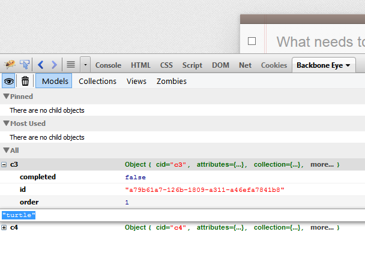
Search for models to investigate
Search can be either case sensitive or case insensitive. Valid search strings are
- attributename:value
- (partial) or full attribute name
| Search by partial attribute values |
| 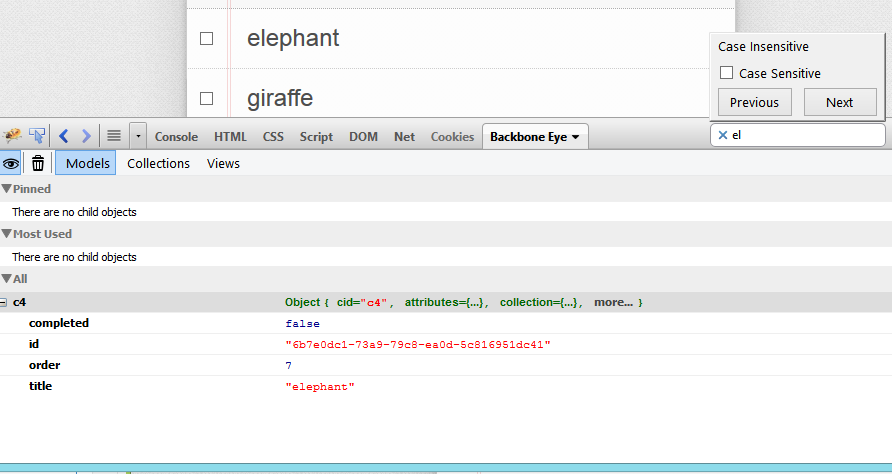 |
| Narrow further by specifying a attribute name |
| 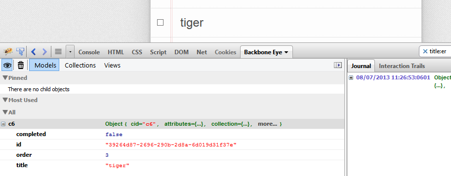 |
Nail down a model
Use the pin command to nail down models to investigate. Typically, search would precede the pin command.
| Pin a model |
| 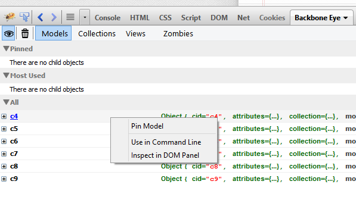 |
| Un Pin a model |
| 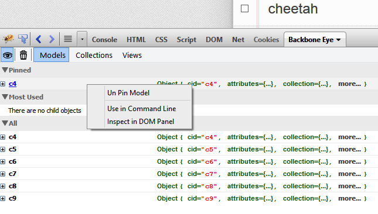 |
Model Activity Indicators
Models having updates are momentarily highlighted with a colored band to draw user attention to model activity.
| Update a Model |
| 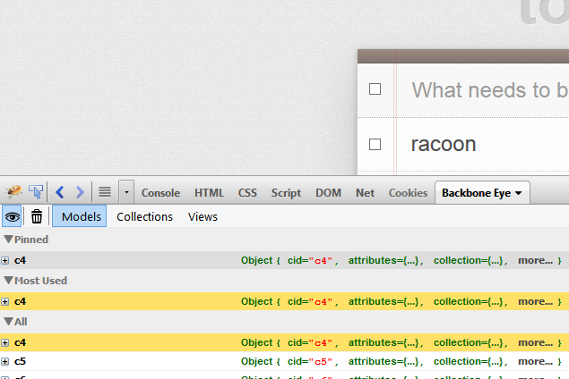 |
| Destroy a Model |
| 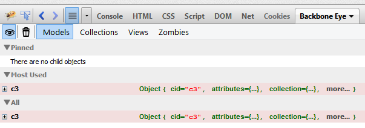 |
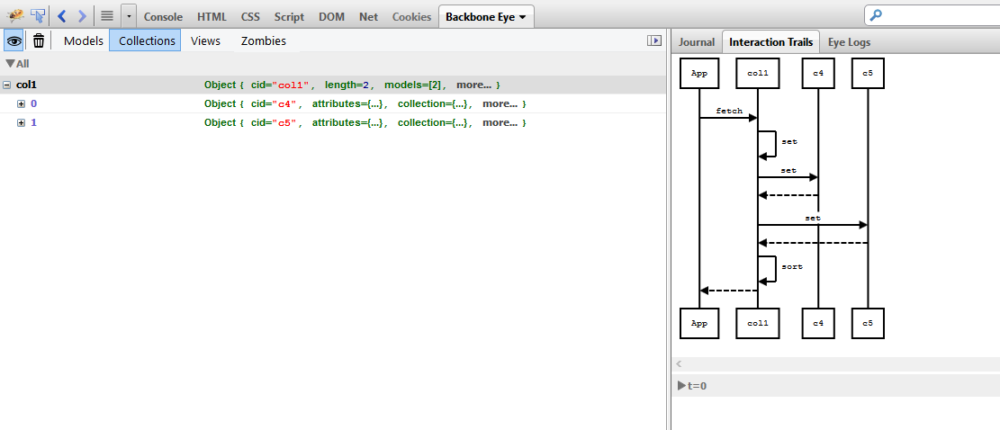
Note Also works on selected collection and view.
Note Read operations are deliberately not shown as they don't change application state (and will only contribute to investigative noise). In future versions, we may have an option to switch on this behavior.
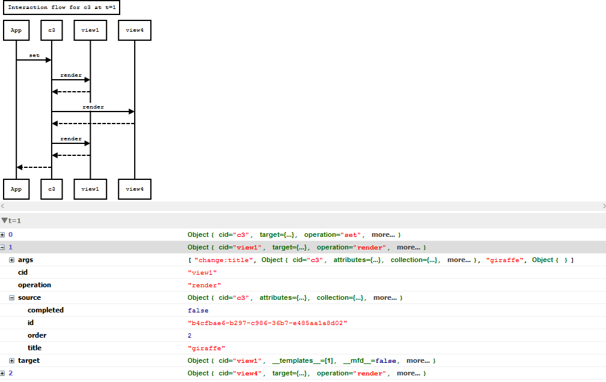
The view shows the interactions which have happened at time t = 0, 1, 2 ... n. To view a interaction at t = m, click on the t = m header. The diagram shows the flow at that time slow. Expand the t=m section to see detailed info about the state of the entity(model, collection or view), params passed in etc.
Clear Interaction Trails and Journal data
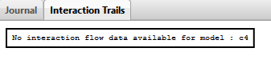
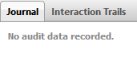
It is also possible to not record this data. Toggle the eye button to stop or start recording this data
| Not recording | Recording | |
| 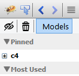 | 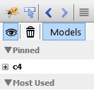 |
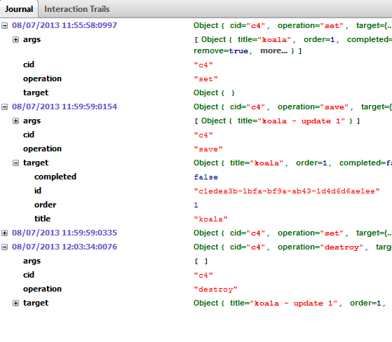
Note Also works on selected collection and view.
Note Read operations are deliberately not shown as they don't change application state (and will only contribute to investigative noise). In future versions, we may have an option to switch on this behavior.
Note Remember that this data can be cleared out as described here
View Categorization
A listing of view objects discovered by Backbone Eye. This section has two sub sections.
| 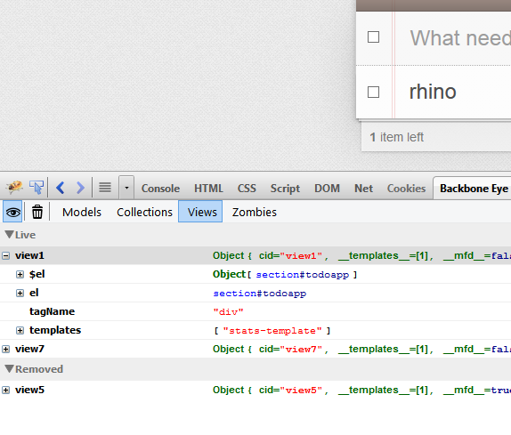 |
|
Template inference
Backbone Eye infers templates which may have been used to render the views. In case a template-id was not specified in the application, a dummy template-id is assigned (starting with template_). This becomes the surrogate key of the template. These templates are visible in Firebug's Script Panel.
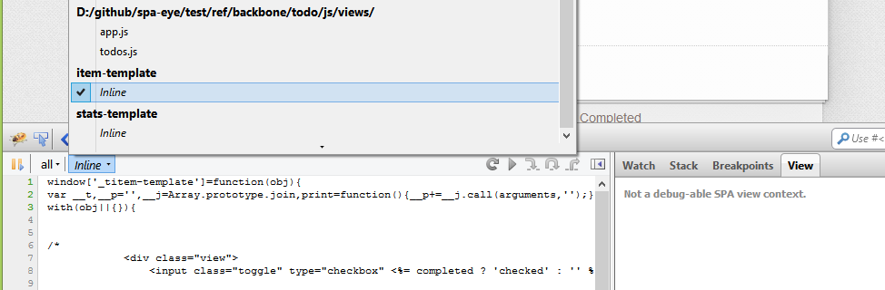
Debug the view generation process
View templates can NOW be debugged!
The list of templates discovered by Backbone Eye are now present in the source box of the script section of Firebug.
The Javascript code to transform the the template is shown in the source box. The source is commented with the template tags so it is easy to see what code transforms that template snippet. The script panel has a new side-panel : Views. When a view template is being debugged, this panel becomes active and shows the data being passed to the template, the source template and the incremental template string being populated with data as the debugger steps through the template building process.
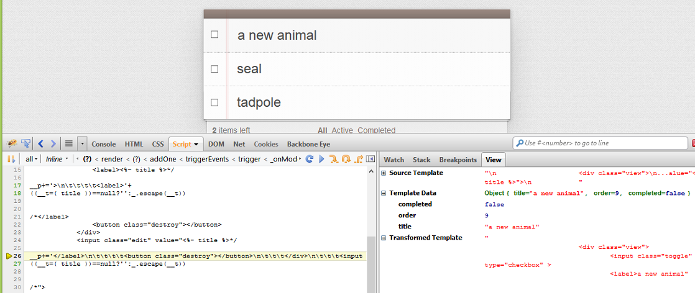
Identify a View
From Backbone Eye
Click on a view object in Backbone Eye to see the corresponding screen highlighted in the application.
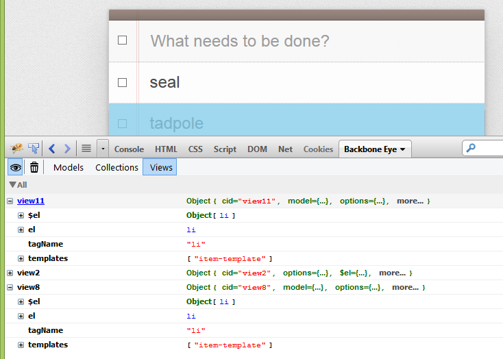
From Application Screens
Alternatively, using the inspector, select a screen in the application. The corresponding view in Backbone Eye will be highlighted and expanded.
Note Use this to identify a backbone view for the corresponding application screen
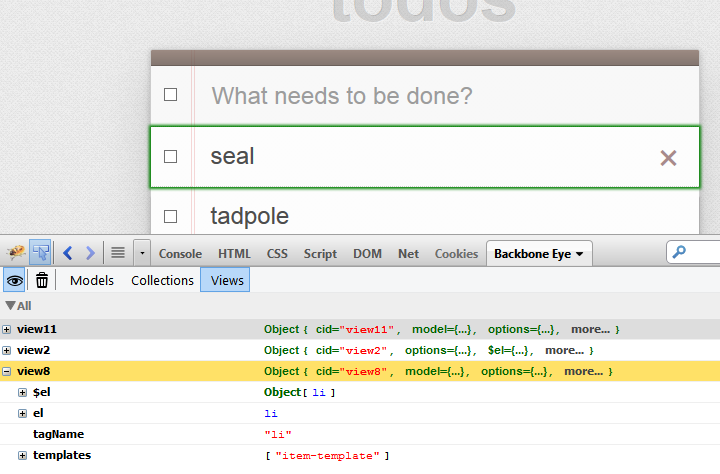